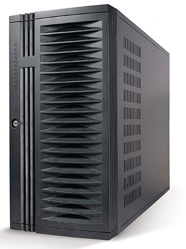
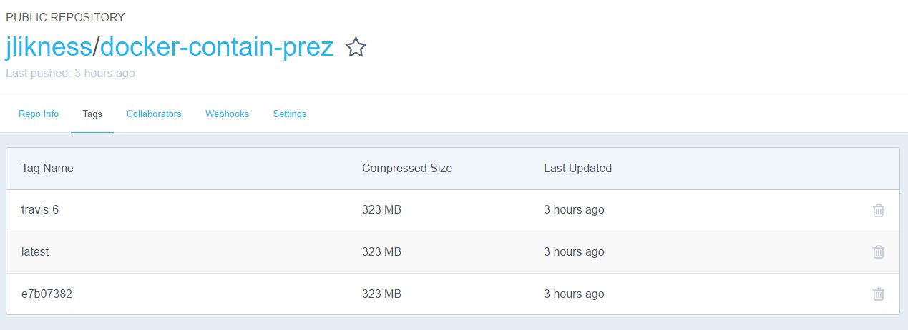
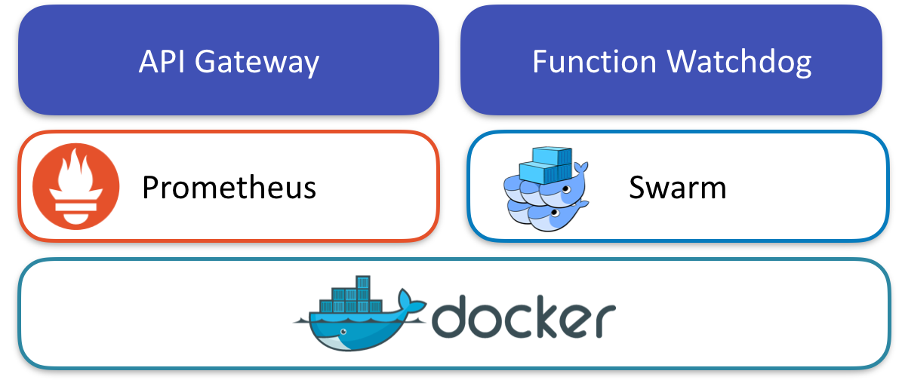
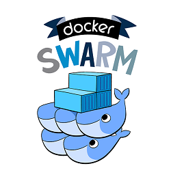

Docker 4 Devs

Presented by @JeremyLikness


A privately held IT consulting firm headquartered in Midtown, Atlanta.
About Jeremy
public class WhoAmI {
public numYearsExperience: number = 20;
public beganProgrammingAtAge: number = 7;
public numYearsMVP: number = 7;
}
Thank you, Music City Code
Agenda
- What is Docker?
- Why Docker?
- Getting Started
- Building Images
- Docker Compose
- Advanced Containers
- Q & A
What Is Docker?
Physical Server
Virtual Machine
Virtual in the Cloud


What Docker is...
- Standardized unit for software development
- Code, runtime, tools and libraries in one place
- Shared host (multiple containers per host, potentially multiple hosts per VM)
- Least privilege, secure by default
Why Docker?
Standardized
Lightweight
Predictable and Consistent
Fast
Enterprise
- Scalable
- Elastic
- Resilient
Getting Started
docker run hello-world
Getting Started
index.html
<html>
<head><title>Simple Page</title></head>
<body><h1>Hello, Docker!</h1></body>
</html>
Dockerfile
FROM nginx
COPY index.html /usr/share/nginx/html
EXPOSE 80/tcp
Command Line
docker build -t hello .
docker run -d -p 80:80 hello
docker ps
docker stop {id}
docker rm {id}
Building Images
FROM ubuntu:16.04
RUN rm /bin/sh && ln -s /bin/bash /bin/sh
RUN apt-get update \
&& apt-get -y install build-essential \
&& apt-get -y install curl \
&& curl -sL https://deb.nodesource.com/setup_6.x | bash - \
&& apt-get -y install nodejs
RUN npm i -g angular-cli@1.0.0-beta.24
RUN mkdir -p /src
COPY . /src
WORKDIR /src
RUN npm i
RUN ng build --prod --aot
FROM ubuntu:16.04
This command creates a base image. It goes to the trusted Docker Hub registry, finds a repository named "ubuntu" then pulls the image with the tag "16.04".
RUN rm /bin/sh && ln -s /bin/bash /bin/sh
This command removes a tiny shell that is standard with Ubuntu and replaces it with a symbolic link to the bash shell instead. At the end of this command, a second iterim image is created. Whatever follows "run" is executed in the container, and then a snapshot of the container is taken when the command completes.
RUN apt-get update \ …
Several commands chained together. These commands update packages on the image to the latest and install dependencies including Node.js. Yet a third image is created. Chaining commands cuts down on the number of interim images.
RUN npm i -g angular-cli@1.0.0-beta.24
Now that Node.js and the Node Package Manager are installed, the Angular Command Line Interface (CLI) is installed. Another interim image is created.
COPY . /src
The contents of the current directory are recursively copied to the contents of a "src" folder in the container. Left is local context, right is container context.
Summary
The Dockerfile just shown essentially prepares a build machine capable of creating Angular 2 applications, then moves the source from a project to the build and then compiles a production image of Angular.
Dockerfile Commands
The complete listing is available online (Dockerfile reference). These are some handy commands to know when creating your own images.
CMD, ENTRYPOINT
This command provides a default set of instructions to execute when a container is started. Unlike "run" there should be only one "cmd" and it may be overridden by derived images. "Entrypoint" refers to the executable and "cmd" provides a default set of parameters.
EXPOSE
Expose tells the container to listen on a port. By default, you cannot communicate with a container. Expose only sets the container up to listen at the port and does not make the port available from the host. To do this requires mapping the port with the "-p" flag.
ADD
Add is similar to "copy"" in that it places content in the container. It differs in that the content can be a URL ("copy" only looks at the filesystem.)
VOLUME
Volume exposes the container's filesystem via a "mount point." Whatever path is specified by this command is available to mount to the local filesystem when the container is run. Note this just makes it available. Other configuration is required to perform the actual mapping.
Simple Two Container Demo
The demo is based off a lesson in an all-day Angular (2.x) workshop. The specific lesson is 55-Docker and involves an Angular container that talks to a micro-service container.
Orchestrate Multiple Containers
Docker Compose enables you to describe an environment. That environment can include one or more containers, private networks, shared storage, and even load-balancers and proxies. A "Docker Compose file" contains the instructions for building and orchestrating the environment.
Demo: Multiple Containers
This uses the same example that the Docker demo did, only runs leveraging the docker-compose command instead.
Walkthrough: Docker Compose
Example docker-compose.yml.
- Networks
- Services
- Ports
- Dependencies
- Links
- Environment
- Volumes
Advanced Containers
Multi-Stage Build
# ---- Base Node ----
FROM node:latest AS base
# install node
RUN apk add --no-cache nodejs-current
# set working directory
WORKDIR /root/fib
# copy project file
COPY package.json .
#
# ---- Dependencies ----
FROM base AS dependencies
# install node packages
RUN npm set progress=false && npm config set depth 0
RUN npm install --only=production
RUN npm run-script build
# copy production node_modules aside
RUN cp -R node_modules prod_node_modules
# install ALL node_modules, including 'devDependencies'
RUN npm install
# ---- Release ----
FROM base AS release
# copy production node_modules
COPY --from=dependencies /root/fib/prod_node_modules ./node_modules
# copy app sources
COPY index.js .
# expose port and define CMD
CMD npm run start
Function as a Service
Not to be confused with "serverless"
Orchestration
Serverless
- WebTask.io
- Azure Functions
- AWS Lambda